23.10.2026
song that's on right now
The End by My Chemical Romance
i have had a postively wonderful day
i woke up bright eyed and bushy tailed at about 6:30
(today is very bunnycoded)
i got to town about 7:15 and walked around for a while until i met up with my friend
and then we went to tescos but that wasn't much that's not the fun part
we then went on the bus to [data expunged]
and then we got to the hmv, there were only a couple of people there so that was cool
and i gave out some of the bracelets i made yesterday which was so awesome i only have five left now which is awesome because i made 28
and i got a bracelet and a drawing of ray toro in return wowzers
and then we waited and then the hmv opened
and then we got to go into the hmv
and they had an exclusve vinyl (ooooh) which is very cool
i'm looking at it now :33 it's on my shelf yay my shelf
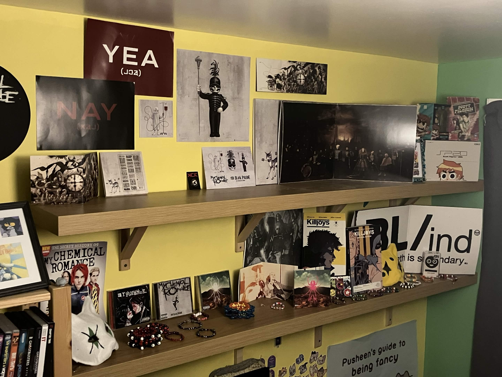
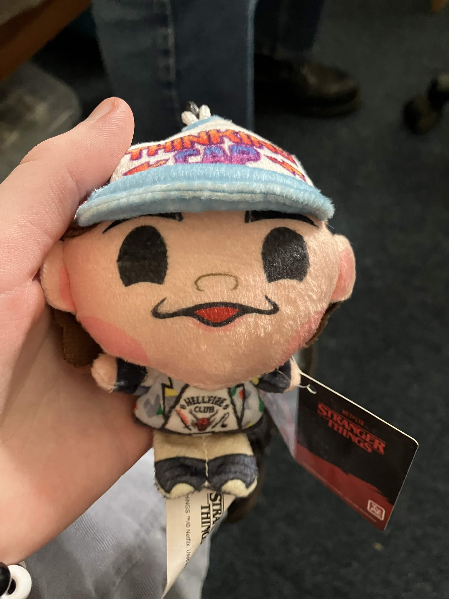
28.09.2026
song that's on right now
Storyteller by Patricia Taxxon
we've been dissasociating for a full day now.
simon was here at some point and according to allison's tumblr posts so was faith.
i am here now. i dont think ive ever fronted alone before
i dont like it. i want allison back
i made it a playlist so hopefully bun will be back soon
if this doesnt work ill watch some of kits movies until it comes back
i cant be alone i dont want to be alone.
im glad it made it easy to add these entries
it should know i was here
-D
23.09.2026
song that's on right now
Ringtone by Weird Al
haha so uhhhh i just kinda. forgot to update here for a long while. but i'm gonna try to be abit more on it
going to make some site bits for my eeveelution ocs.
finished off Finn's today yay
well anyway that's Robin signing off, have a good morning,
and in case I don't see you good afternoon, good evening, and good night
ps. u should friend me on spacehey
https://spacehey.com/robbiegraves
04.08.2026
song that's on right now
Someday by The Strokes
i've been swamped. with business.
but in all seriousness yeah uni has kinda been kicking my ass but i have it under control.
nothing specific to add today.
had a weird sunday, weird tumblr posts i guess but that happens. wonder who it was.
well anyway that's Robin signing off, have a good morning,
and in case I don't see you good afternoon, good evening, and good night
26.07.2026
song that's on right now
Sugar We're Going Down by Fallout Boy
haha sorry i haven't updated in a while
i kinda got in a slump after last weekend
i saw the guy i kinda hate
so i drew stuff about it
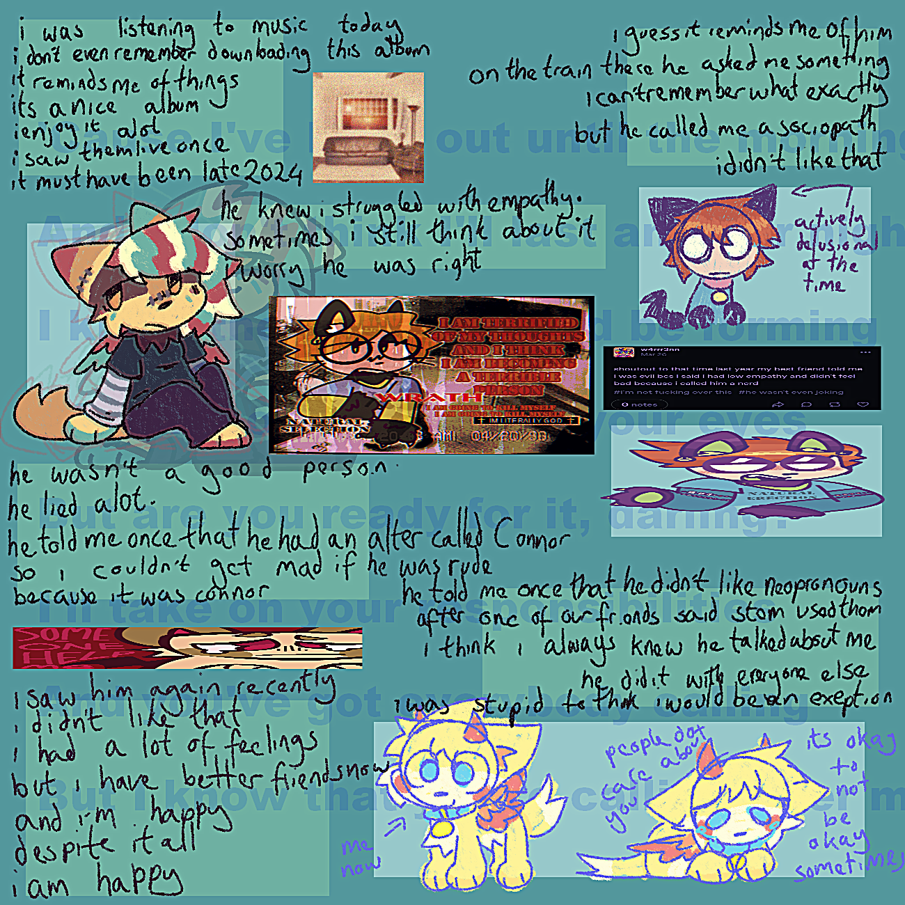
15.07.2026
song that's on right now
Na Na Na by My Chemical Romance
post concert depression is hitting me so hard.
i hate that i cant bring myself to do anything
i feel fucking useless
what am i even doing with my life
-D
12.07.2026
song that's on right now
nothing. i am not listening to music.
i am so autistic.
i burnt a new cd.
i love mcr.
that is all.
12.07.2026
song that's on right now
Na Na Na Na Na Na Na Na Na Na Na Na
i am listening to my new Danger Days cd rn.
i love danger days. bit dissapointing that there's no Dr Death Defying but its okay the songs are still peak.
Danger Days they could never make me hate you
song that's on right now
Bulletproof Heart
sorry i have't had alot of time to update here i've been very busy and very autistic
on thursday i had to prepare to go to see mrc
and then on friday i did see mcr
and yesterday i spent most of the time sleeping or being autsitic about mcr
i rearranged my shelf and everything so it can hold all my merch
song that's on right now
SING
haha it took longer to get the pictures than i thought - i'm also adding pictures of my shirts because they aren't on the display because im going to wear those
song that's on right now
Planetary (Go!)
hm i just thought about it and now im nervous this cd won't have Vampire Money but i will *grits my teeth* throw a party parade if it doesn't
ANYWAY LOOK AT MY COOL SHIT
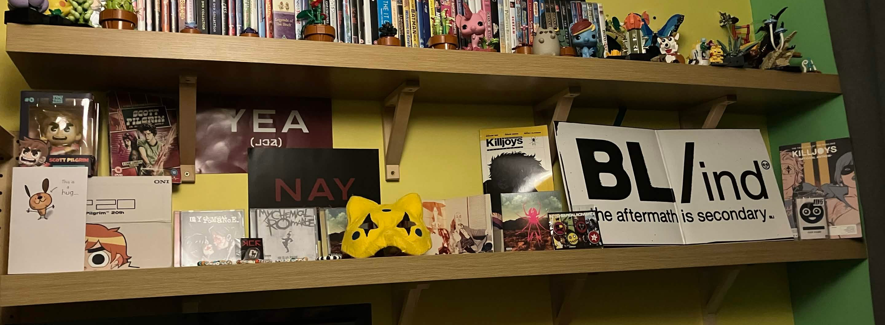
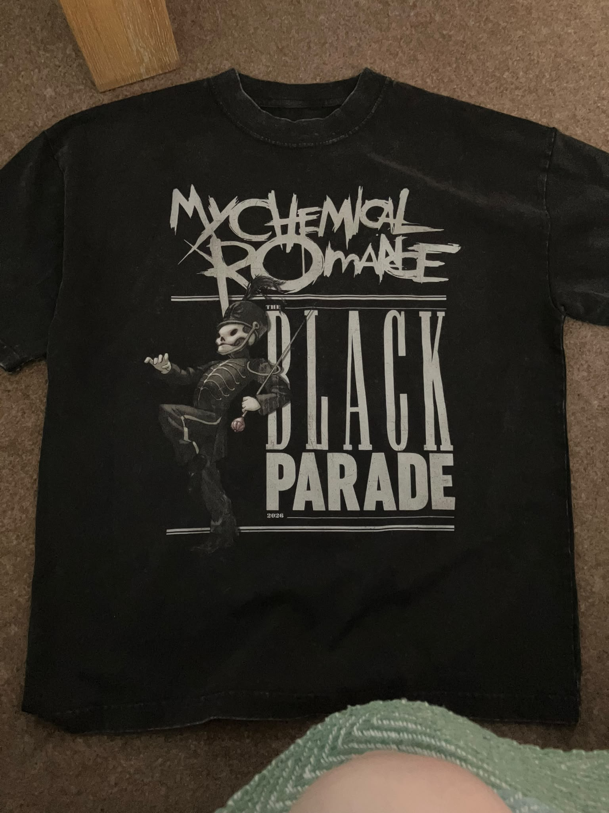
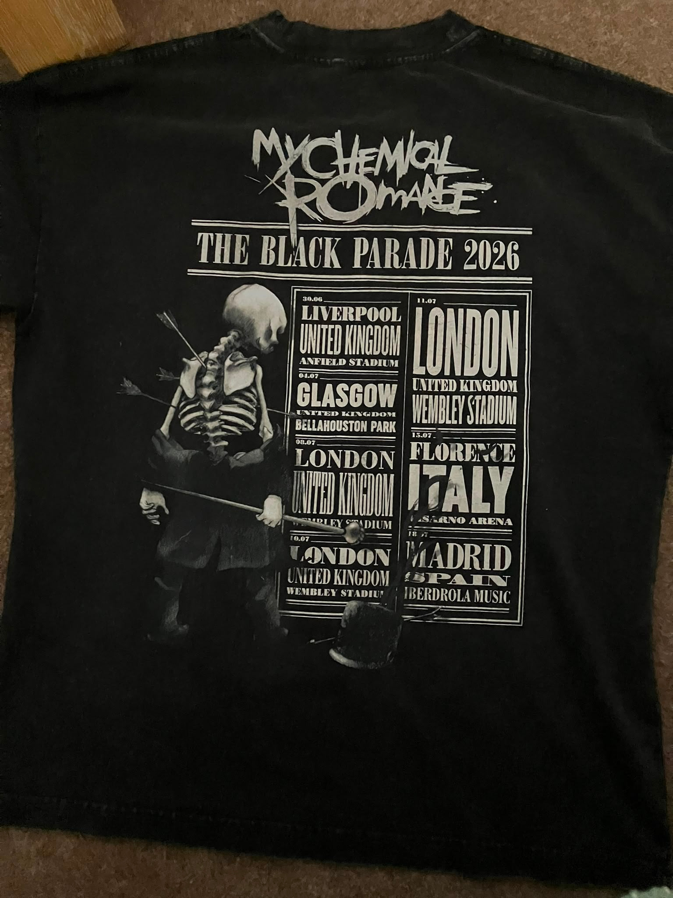
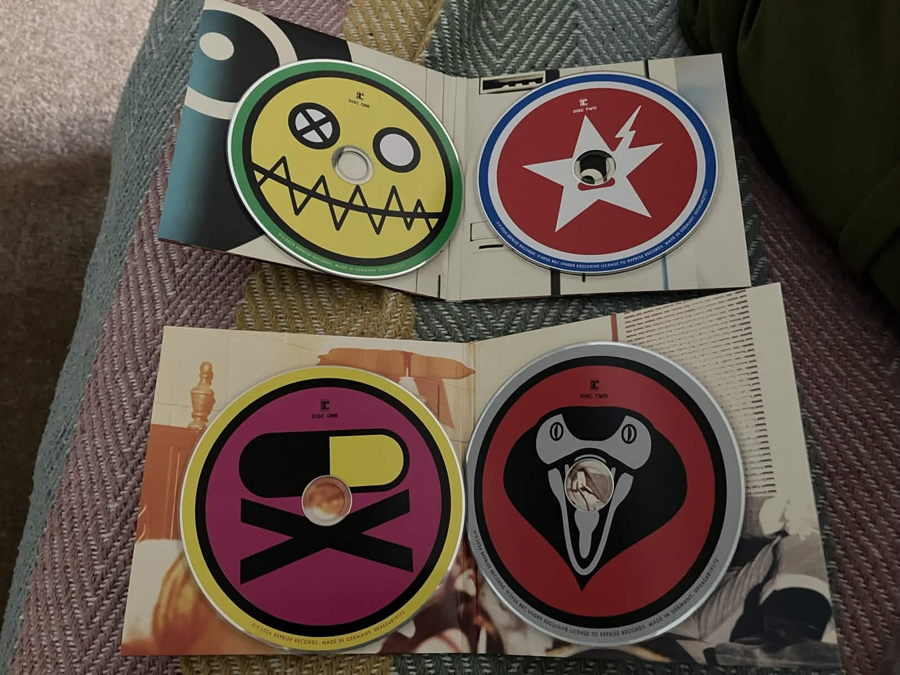
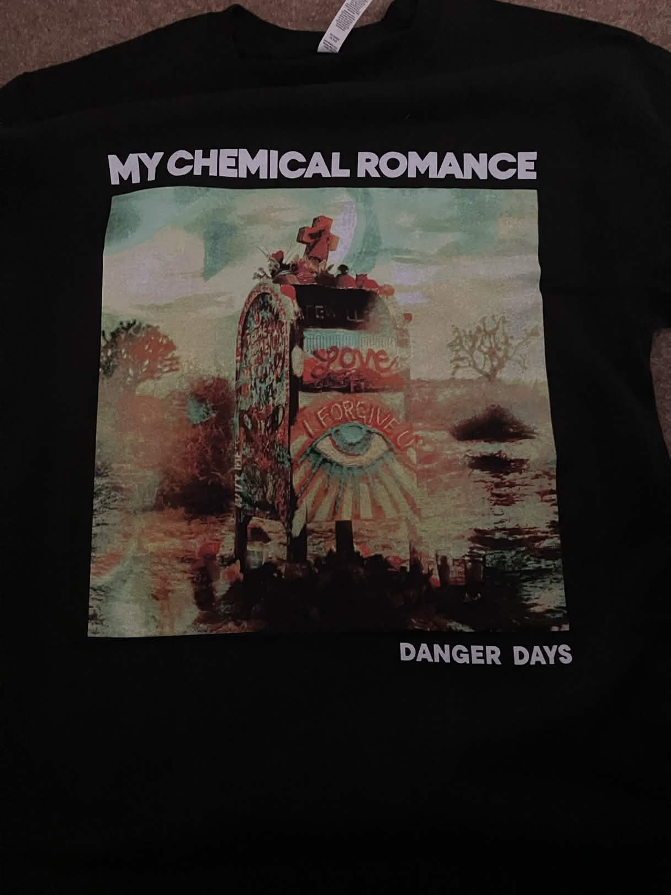
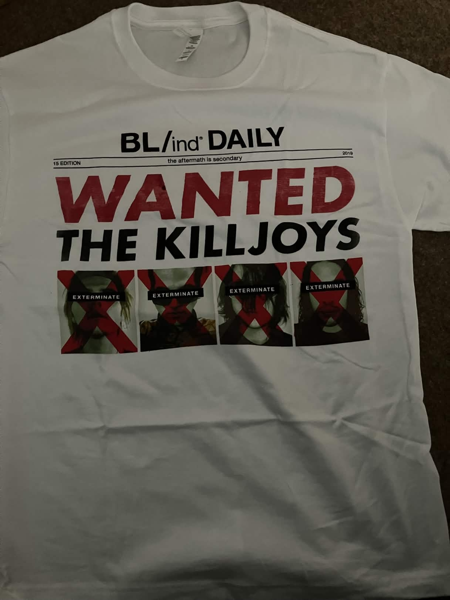
song that's on right now
The Only Hope For Me Is You
pretty awesome, right?
i'm listening to the cd with the venom siblings designs on them rn
my only thing about the shelf is im not a fan of the gap between killjoys calidfornia and the next shelf hold up thingy
i might use the insert from the vinyl ??
yeah so i got the tour shirt (obviously) and the vinyl and the Draag pin at the concert
song that's on right now
Party Poison
wow this song feels really different without the random japanise lady at the start
yeah so i also gave out some kandi stars and i got some stuff in return !!
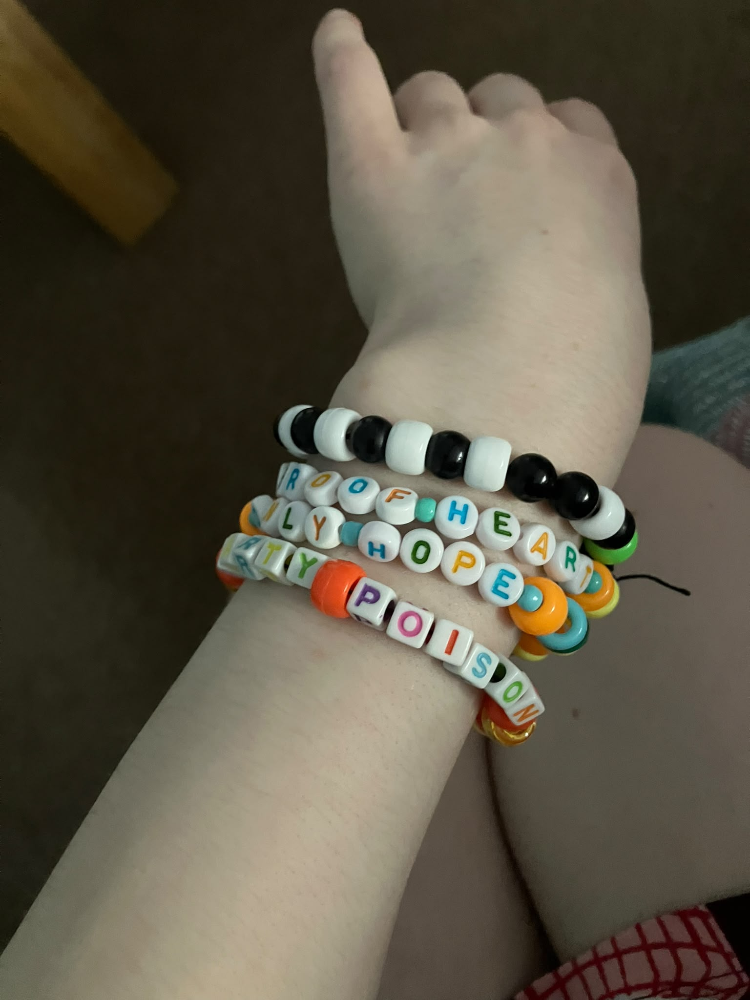
song that's on right now
Save Yourself I'll Hold Them Back
i had such a good time tho
i felt like properly alive and like i was me it was so good
and everyone there was so nice, one of the people i got kandi from even came up to me and said my mask was cool and that's how i got the Party Poison bracelet
oh my god i love this album so so much i might even make an mcr section of this website bcs im so mega autstic
song that's on right now
S/C/A/R/E/C/R/O/W
i am genuinely so thankful for the whole experence it was fucking trancendent i think it was actually life changing
i did cry during demolition lovers and that is so valid okay
fuckkk this song is so good aswell i love you frank iero thank you for peak setlists
praying every night to mcr bcs i'm normal <3
spins around in circles spins around in circles spins around in circles
song that's on right now
Summertime
fun fact about my shelf, the Party Poison mask is being held up by a funko pop of Seapony!Fluttershy
song that's on right now
DESTROYA
i don't rember if i mentioned but i might put the insert for the vinyl up on the blank space of the wall
i might play Crypt Of The Necrodancer later, i put some mcr songs into it a while back i should play it again it's really good
DESTROYA DESTROYA DESTROYA DESTROYA
oh my dog common danger days w this shit is so peak
i'm actually quite excited for the second disc bcs ive only really listened to the b sides and other stuff once, i tend to save stuff like that for a rainy day
song that's on right now
The Kids From Yestarday
it would be so fucking funny if the next track was just a shittier version of the american national anthem bcs theres no goodnight dr death
man i love this album so much
wags my tail wags my tail wags my tail wags my tail
this song and famous last words kind of have the same vibe as eachother like at the core of them i don't really know how to explain
song that's on right now
Vampire Money
LETS FUCKING GOOOOOOOOO
grins so big
as good of an ending Kids From Yesterday is Vampire Money is a way better closer
i mean in my soul i think Danger Days is embracing who you are and just doing whatever the fuck you want it deserves to go out with a bang like this
THE KIDS DONT CARE IF YOU'RE ALRIGHT HONEY PILLS DONT HELP BUT IT SURE IS FUNNY GIMMIE GIMMIE SOME OF THAT VAMPIRE MONEY COME ON !!!!
song that's on right now
Zero Percent
time for disk 2 !!
they played this song live for the first time on friday when i saw it i thought that was super awesome
haha i might have less comentary on these bcs i need to *listen* to them more if you get what i mean
song that's on right now
We Don't Need Another Song About California
i am so joyous and thankful for this album
thinking about whoever that was on discord that said that mcr should have stayed underground, and i get that to an extent but also i'm really glad that they exit to this extent because they get to play awesome shows and fufill their creative vision to the fullest
idk entirely vibes based but they seem like the kinda person to dislike danger days on its face
song that's on right now
F.T.W.W.W.
i fuck with the vibes of this already
song for all the robotfuckers in the audience (me)
song that's on right now
Mastas Of Ravenkroft
ngl i should have spent more time with Mad Gear And The Missile Kid before this i fuck with it so hard
song that's on right now
Black Dragon Fighting Society
i really feel like i should have more to say but i'm honestly just enjoying myself rn.
fuck this shit is so good
wags my tail wags my tail wags my tail wags my tail
i wish these songs went on for longer :(
song that's on right now
Common People
fun fact ! i've actually seen Pulp live
oh wow i just checked it was in 23 it didn't feel like that long ago
either way common mcr w
this is a very danger days song ngl it does fit pretty well
life is so joyous im so happy to still exist i can listen to awesome music and have an aweosme time
song that's on right now
SING (Itunes Festival)
i wonder how many people who own stuff on vinyl actually listen to them
and since i do own a vinyl i do technically fall into this category now but i have it on cd aswell which i am listening to it on
ngl i do think SING is the weakest track on the album but that's just a personal thing
song that's on right now
The Kids From Yesterday (Itunes Festival)
this is so peak this is so peak this is so peak
haha i always forget this song has a longass outro
song that's on right now
Na Na Na (Na Na Na Na Na Na Na Na Na) (Recorded for BBC radio 1)
i don't actually know how many Nas are in the titile i just go off of vibes
this album is so awesome it's so special to me
"angels made from neon and fucking garbage" is such a fire line i am not getting over that ever actually
that was so sick. i love this album so much thank you my chemical romance <3
08.07.2026
song that's on right now
Raise Up Your Bat by Blood Crushers The Band
robbie did a drawing of me earlier that was really nice of it.
it made me feel a bit more real.
its nice to me but i think its out of courtesy.
if theres another person in your body its probably worth catering to them so they don't ruin your life.
the more that i think of it i have alot of power over it.
i like that.
i hope it reads this later.
sometimes its okay to stay lost
-D
07.07.2026
song that's on right now
Sync Up from Be More Chill (the 2019 broadway version)
thinking about Be More Chill Right now
I really like Be More Chill
I mean its kinda part of where im sourced from???? I think????
it gets a little muddy and hard to think of when I try too hard
either way I sort of self actualise myself as Michael. that's me. I'm in the musical :)
and people like me. I like that I think. sometimes it's scary though. that I'm me but that's also me?
I'm rambling I should stop rambling
> Mikey :3
my colour isn't working :(
i fixed it :D
07.07.2026
song that's on right now
The Whole World and You by Tally Hall
haha wow.
05.07.2026
song that's on right now
Small World by Jack Stauber
haha sorry it's been a little while hasn't it ?
i have. been busy to say the least
well busy and overwhelmed and not entirely myself but thats okay im working on it
i just got home from norfolk
which was okay i guess but i got my period and that was horrid and evil
sometimes its okay to stay lost
-D
01.07.2026 (part 2)
song that's on right now
Rawdog by Flavour Foley
i still don't know who that was, he's still here a bit, she cried for a while before i got ahold of myself more and did some drawing to try to calm her down, i think she liked that
i think it's just because today has been alot for all of us, faith and simon have both been out in parts today too its given me a real headache
faith was cofronting for most of my time at uni and i think simon was there on occasion but not as much as her
whoever the other one is i don't think she's new, this feels like how i felt when i read scott pilgrim (time wise not literally connected to reading scott pilgrim)
oh and faith has a name now, good for her, i might try to make her a page too at some point if she wants me to
the only one of my alters that will not get a dedicated part of the site no matter what is socks, she's been on the internet a bit before but i don't really want her fucking things up for me.
sorry socks i love you
well anyway that's Robin signing off, have a good morning,
and in case I don't see you good afternoon, good evening, and good night
01.07.2026
song that's on right now
Flower Man by Toby Fox
i. have no idea who's fronting right now.
someone was in my dream before this and i think it might have been her.
she definitely wasn't faith or socks.
its someone else.
can there stop being more of them.
please.
this is horrible.
i hate them.
i hate all of them i wish they'd go away and leave me alone i just want to be me and know that i'm me why is that so hard why can't i be normal.
that is all.
28.06.2026
song that's on right now
Rainbow Connection (2020 version) written by Paul Williams and Kenneth Ascher
i've had a nice day today, it hasn't been as hot as it has been and that's cool
i actually worked on some stuff for uni, i made the interact system, and by i made it i mean i made the basis of it nothing actually happens when you interact with it yet, i'm going to work on that on tuesday
i had more of the brownies that jane made that was cool i liked them :33
and hopefully roxy might come around tomorrow (today techincally i'm writing this past midinght, i have with most of these but i attribute them to the day i am recounting rather than the day they were written)
the song changed while i was writing this it's The Blingo Song now which is quite funny hot off the heels of Rainbow Connection but i'm not complaining,
that sort of reminds me i need to look into the moshi monsters reboot stuff, i played a bit of rewritten a couple years ago for some reason. man i miss moshi monsters that was peak.
oh and i can't beleive i forgot but i've started to revamp the site because i don't feel much attachment to the barknbyte user anymore so we're deers4fears coded now
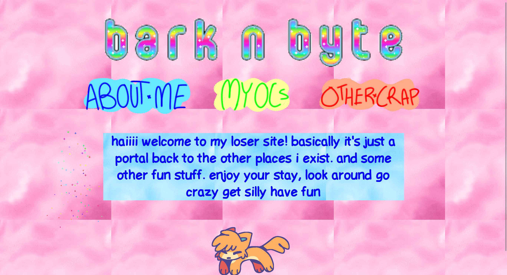
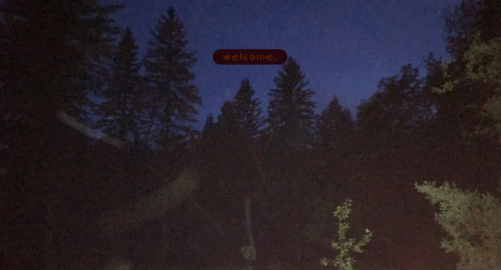
27.06.2026
song that's on right now
Gettin My Mom On by Jack Stauber
haha i kinda forgot to update this for a bit but that's okay. i did some development on Simon's page on wednesday and thursday that was cool.
oh and deltarune chapter 5 came out that was super cool, i might make a seperate page about that for people who don't want spoilers - not that anyone even looks at this site let alone this page -
AND MY FRIEND CAME OVER TODAY YAY !! it was really cool we watched Nerdy Prudes Must Die it was so awesome she really liked it which is great because its awesome
23.06.2026
song that's on right now
Love Song by Straight Outta Junior High
oh my god it is hot as balls here i have got literally nothing done and i don't know if i'll ever get anything done again i am going to die of heatstroke i swear to god. i can't even turn on my pc bcs i'm scared she'll get too hot and i don't want to hurt her :((
i might just do some work on this site if i can be properly bothered to do that.
your friend, Simon
ps. i might make a little page for my alters intros so i have those all in one place for them to look at